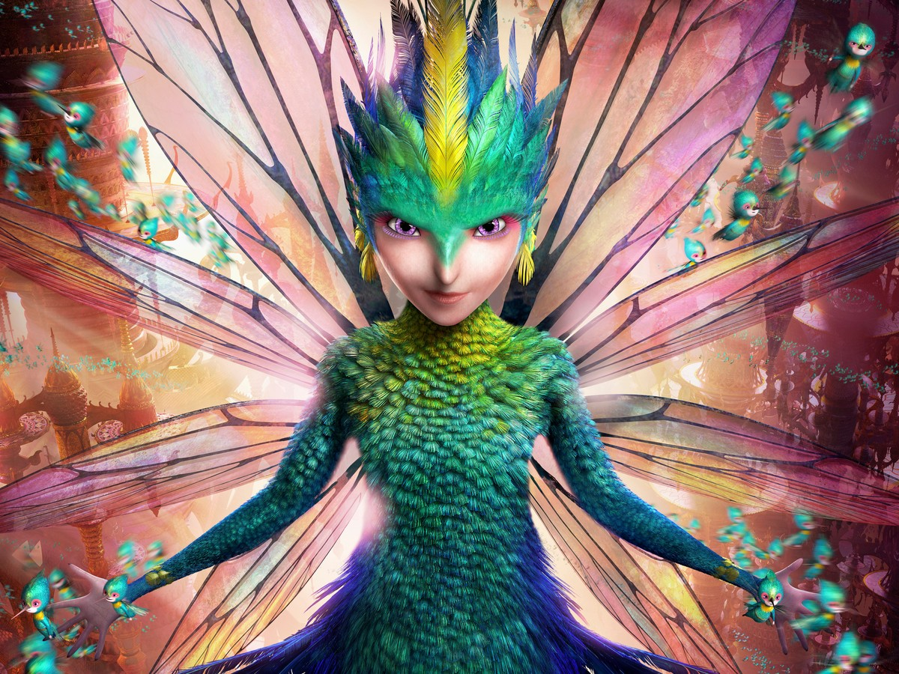

The Collection — Memory Keeper's Doctrine
She keeps every tooth and every memory — spend a stolen memory to make an enemy forget how to fight, or return a cherished one to put an ally back together.

The Collection — Memory Keeper's Doctrine
She keeps every tooth and every memory — spend a stolen memory to make an enemy forget how to fight, or return a cherished one to put an ally back together.
Feature map
Level-by-level features, as the figure refined them.
The Memory Keepers
Passive · Memory pool (maximum 2 × PB).
You are never alone — a swarm of mini-fairies attends you, each one a collector. You have advantage on Perception checks that rely on sight for anything within 60 ft of you; the swarm is always watching. When a hostile creature within 60 ft of you drops to 0 hit points or becomes stunned or incapacitated, the swarm takes a tooth: gain 1 Memory (maximum 2 × PB). A Memory is always tied to the creature it was taken from. You may spend Memories on this technique's features; unspent Memories fade when you finish a long rest. Every tooth holds a memory. Every memory is kept.
Taken, Not Given
Action · 1 Memory · a creature whose memory you hold.
Spend a stolen memory to unmake its owner's skill. The creature makes a WIS save against your CE save DC. On a failure, for 1 minute it has disadvantage on attack rolls and subtracts 1d4 from its saving throws — it has forgotten how to fight, and the forgetting hurts. The memory is spent whether the save succeeds or fails. She does not enjoy this part. She does it anyway.
A Cherished Memory, Returned
Action · 2 CE + 1 Memory.
Not every memory is a weapon. Spend any Memory to return a warm one to an ally within 60 ft: the ally regains hit points equal to 2d8 + your WIS modifier and ends the frightened or charmed condition on itself. It does not have to be their memory — a remembered summer afternoon heals whoever holds it.
The Swarm Skirmishes
Bonus action · 2 CE.
The collectors become skirmishers. Choose a creature within 60 ft of you: it takes 3d6 piercing damage as a hundred tiny wings become a hundred tiny blades, and it cannot take reactions until the end of your next turn. You may use this feature once per turn. Small is not the same as harmless.
The Vault Remembers
Passive.
The collection deepens. Your Memory maximum becomes 3 × PB. Additionally, when a hostile creature fails a saving throw against one of this technique's features, the swarm loosens a tooth in the struggle: gain 1 Memory from that creature. Fear makes the teeth come loose. So does everything else, eventually.
Every Tooth Tells
Passive.
You read a tooth the way others read a face. A creature below half its hit point maximum makes its saving throw against Taken, Not Given at disadvantage — its grip on itself is already slipping. A Cherished Memory, Returned now restores 4d8 + your WIS modifier hit points and also ends the poisoned condition.
Maximum, Domain, or equivalent.
Capstone material.
The Full Collection
The swarm descends all at once. Every hostile creature within 60 ft of you makes a WIS save against your CE save DC. On a failure, you collect 1 Memory from that creature (respecting your maximum) and it takes 6d8 psychic damage as a piece of itself goes missing; on a success it takes half damage and keeps its tooth. The palace gains a new wing tonight.
Guardian of Memory
Wonder's own archivist. Your Memories no longer fade when you finish a long rest, and the swarm's Perception advantage extends to 120 ft. Once per long rest, when an ally within 60 ft of you would drop to 0 hit points, you may use your reaction to return their bravest memory to them: they drop to 1 hit point instead, and they are immune to being frightened and charmed for 1 minute. Nobody's story ends on her watch.
Build-defining options.
These are optional character-building feats. You must meet each listed prerequisite before selecting it.
Tiny Wings, Everywhere
The swarm relays. When you use Taken, Not Given or A Cherished Memory, Returned, a mini-fairy may deliver it: the range becomes 120 ft and you do not need a clear path to the target, only for a fairy to reach them. The collectors know every shortcut.
Bitter Roots
Some memories are thorns. When you spend a Memory on Taken, Not Given, you may instead return the creature's worst memory to it: it makes a WIS save against your CE save DC, and on a failure it is frightened of you for 1 minute and takes 3d6 psychic damage. She keeps the bad ones too. Someone has to.
The First Lost Tooth
You carry one perfect memory of your own — the first tooth you ever collected, which was yours. Once per long rest, you may use A Cherished Memory, Returned without spending a Memory; the ally also gains advantage on death saving throws for the next hour. It still works. It always works.
A Wall of Wings
The swarm intercepts. When an ally within 30 ft of you is hit by an attack, you may use your reaction and spend 2 CE to impose disadvantage on that attack roll — a hundred wings blur the strike. You may do this a number of times equal to your PB per long rest.